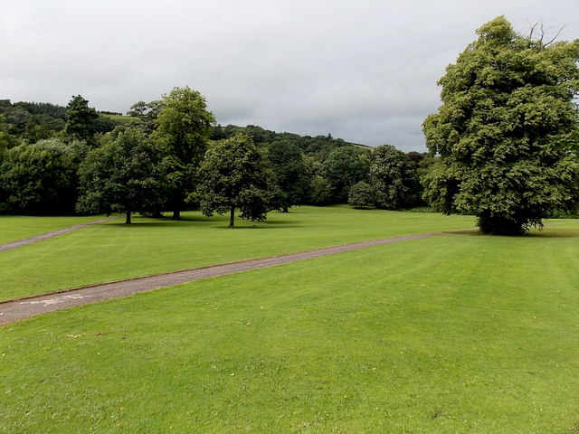
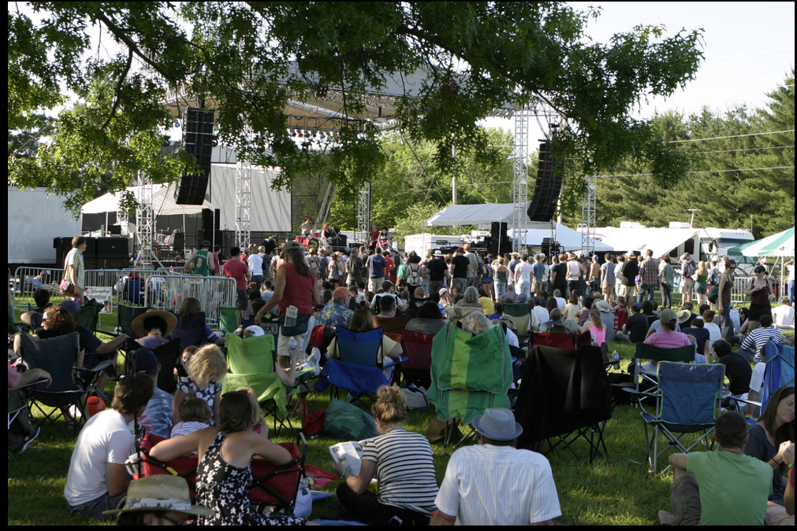

Festival Information
The festival will be held at Dolerw Park in Newtown. The festival will start on the 05/08/2016, and the starting date of the Battle of the Bands competition is 07/08/2016 giving the bands two days to prepare for the competition once they are at the festival.
Tickets will become available for purchase on the 05/06/2016. There will be three purchasable tickets 'Standard Ticket' at 19.99, 'Front-Row Ticket' at 49.99 and the 'VIP Ticket' at 89.99.
There will be a large amount of facilities available for use at the festival to make the experience more enjoyable for everyone there. Facilities like food stands, drink stands, alcoholic bars and burger vans will be there so no one will go hungry. In addition there will be clothing stands, face make-up and jewellery stands, and there will also be toilets there. 